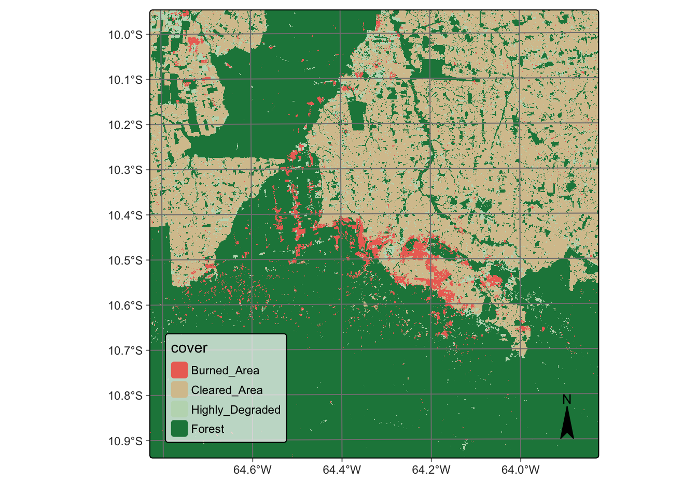

7 Data cubes from local files
Configurations to run this chapter
7.1 Introduction
In many cubes, users need to build data cubes from files installed in locally-accessible computers. The most common case is when one has obtained a data cube by downloading an ARD collection using sits_cube(), getting a regular cube using sits_regularize(). The result will be a local cube. In this case, STAC services are not available and we need to rely on file-specific information.
All regular cubes produced by sits use the same convention for file naming. Images are stored as TIFF COGs and follow the structure <satellite>_<sensor>_<tile>_<band>_<date>.tif. In this case, users only need to provide the names of the original cloud provider, the ARD collection from which the data was obtained, and the directory where data is stores. By default, sits scans the directory looking for files that are associated to a regular data cube. We recommend that users store their data cubes in different files.
A special situation is when users have obtained images by other means, such as downloading Planet collections. In this case, they have to organize the files so that each file corresponds to a single date/band combination and that the file name contains information on tile, band and date. We show an example with Planet data in this chapter.
Finally, users also may want to retrieve local files associated with processed data cubes, such as probability cubes or classified map. Information on how to proceed is also provided in what follows.
7.2 Building data cubes from local files
To build a data cube from local files, users must provide information about the original source from which the data was obtained. In this case, sits_cube() needs the parameters:
-
source, the cloud provider from where the data has been obtained (in this case, the Brazil Data Cube “BDC”); -
collection, the collection of the cloud provider from where the images have been extracted. In this case, data comes from the MOD13Q1 collection 6; -
data_dir, the local directory where the image files are stored; -
parse_info(optional), a vector of strings stating how file names store information on “tile”, “band”, and “date”. In this case, local images are stored in files whose names are similar toTERRA_MODIS_012010_EVI_2014-07-28.tif. This file represents an image obtained by the MODIS sensor onboard the TERRA satellite, covering part of tile 012010 in the EVI band for date 2014-07-28.
Planet data as ARD local files
ARD images downloaded from cloud collections to a local computer are not associated with a STAC endpoint that describes them. They must be organized and named to allow sits to create a data cube from them. All local files have to be in the same directory and have the same spatial resolution and projection. Each file must contain a single image band for a single date. Each file name needs to include tile, date, and band information. Users must provide information about the original data source to allow sits to retrieve information about image attributes such as band names, missing values, etc. When working with local cubes, sits_cube() needs the following parameters:
-
source: Name of the original data provider; for a list of providers and collections, usesits_list_collections(). -
collection: Collection from where the data was extracted. -
data_dir: Local directory for images. -
bands: Optional parameter to describe the bands to be retrieved. -
parse_info: Information to parse the file names. File names need to contain information on tile, date, and band, separated by a delimiter (usually"_"). -
delim: Separator character between descriptors in the file name (default is"_").
To be able to read local files, they must belong to a collection registered by sits. All collections known to sits by default are shown using sits_list_collections(). To register a new collection, please see the information provided in the Technical Annex.
The example shows how to define a data cube using Planet images from the sitsdata package. The dataset contains monthly PlanetScope mosaics for tile “604-1043” for August to October 2022, with bands B01, B02, B04, and B04.
In general, sits users need to match the local file names to the values provided by the parse_info parameter. The file names of this dataset use the format PLANETSCOPE_MOSAIC_604-1043_B4_2022-10-01.tif, which fits the default value for parse_info which is c("source", "collection", "tile", "band", "date") and for delim which is “_“, it is not necessary to set these values when creating a data cube from the local files.
# Define the directory where Planet files are stored
data_dir <- system.file("extdata/Planet", package = "sitsdata")
# Create a data cube from local files
planet_cube <- sits_cube(
source = "PLANET",
collection = "MOSAIC",
data_dir = data_dir
)
# Plot the first instance of the Planet data in natural colors
plot(planet_cube, red = "B3", green = "B2", blue = "B1")
Reading classified images as local data cube
It is also possible to create local cubes based on results that have been produced by classification or post-classification algorithms. In this case, more parameters are required, and the parameter parse_info is specified differently, as follows:
-
source: Name of the original data provider. -
collection: Name of the collection from where the data was extracted. -
data_dir: Local directory for the classified images. -
band: Band name associated with the type of result. Use: (a)probsfor probability cubes produced bysits_classify(); (b)bayes, for cubes produced bysits_smooth(); (c)entropy,least,ratioormargin, according to the method selected when usingsits_uncertainty(); and (d)classfor classified cubes. -
labels: Labels associated with the names of the classes (not required for cubes produced bysits_uncertainty()). -
version: Version of the result (default =v1). -
parse_info: File name parsing information to allowsitsto deduce the values oftile,start_date,end_date,band, andversionfrom the file name. Unlike non-classified image files, cubes produced by classification and post-classification have bothstart_dateandend_date.
The following code creates a results cube based on the classification of deforestation in Brazil. This classified cube was obtained by a large data cube of Sentinel-2 images, covering the state of Rondonia, Brazil comprising 40 tiles, 10 spectral bands, and covering the period from 2020-06-01 to 2021-09-11. Samples of four classes were trained by a random forest classifier. Internally, classified images use integers to represent classes. Thus, labels have to be associated to the integers that represent each class name.
# Create a cube based on a classified image
data_dir <- system.file("extdata/Rondonia-20LLP",
package = "sitsdata")
# File name "SENTINEL-2_MSI_20LLP_2020-06-04_2021-08-26_class_v1.tif"
Rondonia_class_cube <- sits_cube(
source = "AWS",
collection = "SENTINEL-S2-L2A-COGS",
bands = "class",
labels = c("1" = "Burned_Area", "2" = "Cleared_Area",
"3" = "Highly_Degraded", "4" = "Forest"),
data_dir = data_dir,
parse_info = c("satellite", "sensor", "tile", "start_date", "end_date",
"band", "version"))
# Plot the classified cube
plot(Rondonia_class_cube)
7.3 Summary
In this chapter, we explain how to create cubes from local files. Sometimes, users stop a sits session after performing an operation and want to continue from that point onwards. In this case, they can use sits_cube() to retrieve data from local files. This feature is useful, for example, to retrieve data cubes that have been regularized or classified.